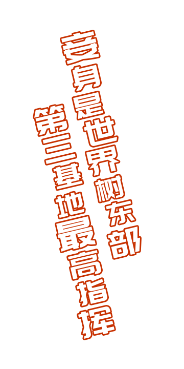
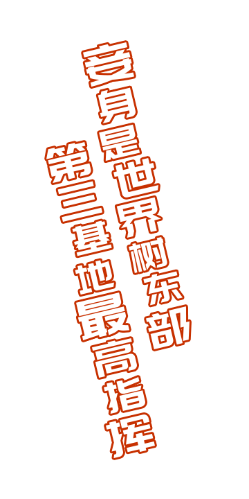

宇宙初识之时，神灵创造了万物，
并创造了人类，但有生灵在，斗争便无休止。
在人类的不断发展中，神灵感受到了人类智慧所带来的威胁，
并试图毁灭人类，人们称之为“堕神”。
巨大的灾难使得整个世界满目苍夷，秃鹰在空中聚啸盘旋争食死尸，
罪恶横流，鲜血染遍大地。
在人类迎来绝望之际，
一部分人类觉醒了体内的神祗基因，并获得与“神”抗衡的强大力量，
人们赋予了他们一个高贵的名字：觉醒者！
于是，追求权利之极致的“神”，与追求物种延续的人类之间的战争便此展开。
在战争的爆发中，超过80%的人类被“神”所杀害，无尽的沙缪让这个世界渐渐变成废墟，但人类也不曾放弃一直在不断进行决死的抵抗作战，无数的“觉醒者”勇敢的站了出来。
人们研究发现，人类觉醒有着必要的条件——引导者。研究表明，只有在远古混入了神祗基因的人类与堕神体内的某种某种“波动”产生共鸣，才能唤醒传承在人类体内的神祗基因，使人类觉醒。为了能安全的使人类觉醒，人们用收集来的堕神细胞创造了“御神柱”，
应用了御神柱的威力，人类才得以唤醒不少的同伴来进行战斗，为了拯救世界上人类，初代引导者、觉醒者以及研究人员——达成共识，在世界上的某些角落开始建立基地并且开始组织调查“堕神”，并实现了资源共享以及制定战斗策略，来揭开“堕神”神秘面纱以
及给人民带来稳定的生活环境。随着组织的强大，不同能力的引导者们带领者自己的觉醒者们对“堕神”逐一斩杀。从而在世界上渐渐站稳了脚跟，在各个地点建造出了对抗堕神的基地。
在战争中，觉醒者由于神祗基因的反作用，渐渐的失去了过往的记忆，虽然有独立的意识和想法，但也慢慢成为战争的机器。人们发现，在与引导者战斗中，觉醒者会渐渐与引导者的波动共鸣，与引导者产生羁绊，使自己的力量越来越强大，也渐渐拥有了自己独特的感情。
所以基地开始培养引导者来负责引导新的战斗力觉醒，以及成长管理和作战计划。
当人们认为自己快要看见黎明的曙光时，一阵银铃般的笑声传来，只见尘土之中走出一位少女的身影，婀娜的身姿下却长满了蜘蛛般的腿，慢慢的一步一步的走了过来，“把你们奉献给我吧”，少女嘻嘻的笑道。堕神们仿佛得到指令一般，开始对持有御神柱的地区
进行猛烈的围攻，人类誓死反抗，大战进行了一天一夜。
那天过后，人们都不在愿意回想起来当时的情景，面对那位一脸媚笑的堕神，人们只能眼睁睁地看着战友在身边纷纷死去，只有寥寥无几的人得以幸存下来，人们在丢了御神柱的同时，也意识到自己对堕神的了解只是凤毛麟角并且这是一场有着详细计划和意识的灾难，
人们放弃了对堕神的大举歼灭计划，开始对自己的战力进行新的改造跟培育新的战斗资源和力量，并对堕神进行了深一步的研究。
在破灭的尽头，究竟堕神巨大而恐怖的力量由何而来？究竟人类能不能取得最终的胜利？